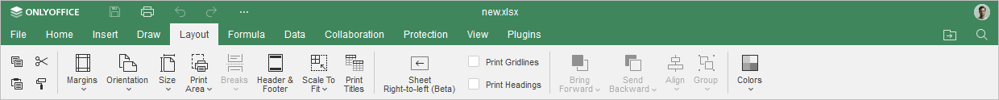
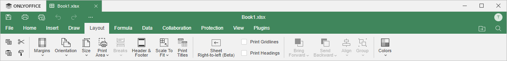

Kartica Layout
Kartica Layout u Spreadsheet Editor-u omogućava podešavanje izgleda radne sveske: podešavanje parametara stranice i definisanje rasporeda vizuelnih elemenata.
Odgovarajući prozor Online Spreadsheet Editor-a:

Odgovarajući prozor Desktop Spreadsheet Editor-a:

Pomoću ove kartice možete:
- podesiti margine, orijentaciju i veličinu stranice,
- odrediti oblast za štampu,
- ubacivati prelome stranica,
- ubacivati zaglavlja ili podnožja,
- skalirati radni list,
- promeniti smer prikaza lista tako da prva kolona bude sa desne strane pomoću dugmeta Sheet Right-to-Left,
- štampati naslove na stranici,
- poravnati i rasporediti objekte (slike, grafikone, oblike),
- promeniti šemu boja.